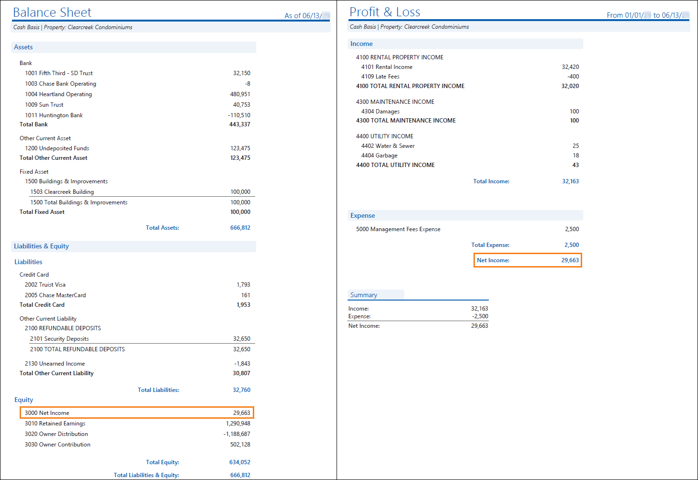

Source: https://rmxhelp.rentmanager.com/Topics/Express/KB/Report-Balance-Sheet-Profit-Loss.htm
Balance Sheet and Profit & Loss
Although the Balance Sheet and the Profit & Loss display different information, when examined together, these two reports give insight into your management company's financial health.
Warning
The information contained here does not replace the advice of an accountant. If you are unclear about how to interpret the data presented in the related reports, please consult your accountant.
The Balance Sheet provides a snapshot of your management company's financials at a specific point of time. It's a life-to-date statement. Additionally, it satisfies the fundamental accounting equation: Assets=Liabilities + Equities. The Balance Sheet provides valuable information on your company's overall financial position (i.e., its longevity and liquidity).
In contrast, the Profit & Loss shows financial activity in all income accounts and all expense accounts during a designated time range. It provides valuable insight into your company's profitability.
Both reports display net income; however, each report includes transactions from different sources in the chart of accounts. Running the Balance Sheet and the Profit & Loss reports together with comparable report options, allows you to verify the net income values match, thus ensuring your financial data in Rent Manager match your real-world finances.
Related Privileges
| Group | Privilege | Column |
|---|---|---|
| Letter/Email Templates/Reports/Packets | Run reports | Enabled |
| Run accounting reports | Enabled |
Additionally, on the Reports tab, you must have access to Balance Sheet and Profit & Loss.
For more information, refer to Control User Access.

Report Options
To populate comparable reports, use the report option combinations listed in the table below. Follow these guidelines to generate a Balance Sheet and Profit & Loss that complement each other. Report options not mentioned do not affect comparability.
| Balance Sheet | Profit & Loss | Description |
|---|---|---|
| As of Date | Date Range |
The dates need to stay consistent between the reports even though one is looking at a range of dates and one is the as of the selected date. For example, if the As Of Date is 04/30/2026, set the Date Range to be from 01/01/2026 to 04/30/2026. More Information To help ensure the Net Income amounts are the same on both the Balance Sheet and Profit & Loss, enter your company's fiscal year start date as the starting date on the Profit & Loss Date Range. |
| Cash or Accrual | Cash or Accrual | Regardless of if you run in Cash or Accrual, the selected option needs to be the same. |
|
Properties/Owners/Group |
Properties/Owners/Group |
The same Properties, Owners, or Property Groups must be included in both reports. |
|
Show whole dollar only |
Show whole dollar only |
This option rounds account totals up to the nearest whole dollar. If you select this option for one report, be sure to select it for the other. |
Troubleshooting if Net Income is Different
Sometimes, when you run the Balance Sheet and the Profit & Loss, the net income amounts may not match. In order to get the clearest picture of your management company's financial health, you'll want the net income amounts to match. The discrepancy in net income amounts is usually caused by issues with the fiscal year start date or transactions coded to the net income general ledger account.
Fiscal Year Start Date
To ensure the net income amounts match on the Profit & Loss and the Balance Sheet, be sure to use the fiscal year start date as the starting date on the Profit & Loss Date Range. In Rent Manager the fiscal year, by default, runs from January 1 to December 31. However, users can change the fiscal year in system preferences. Additionally, users can override the system fiscal year on a property's details page. Ensure that you are using the correct fiscal year start date on the Profit and Loss by checking system preferences and the property's detail page on the Fiscal Year tile.
For more information on the system fiscal year start date and other general ledger settings, refer to General Ledger Settings (System Preferences). Additionally, for more information on adjusting the fiscal year at the property level, please refer to Property Details (Page).
Transaction Using the Net Income General Ledger (GL) Account
Another common reason as to why the net income can differ between reports is if the system net income GL account is selected on a transaction (such as a journal entry), this amount is included in the Balance Sheet net income value, but is not included as net income on the Profit & Loss.
By running the General Ledger report and, in the Chart Accounts to Include report option, selecting the system net income GL account, you can view any transactions entered into Rent Manager where the GL account was selected as the chart account. Drill-down into the report to update any transactions as necessary before running the Profit & Loss and the Balance Sheet reports again.
For more information on the system net income GL account, refer to General Ledger System Accounts (System Preferences). For more information on generating the General Ledger report, refer to General Ledger (Report).